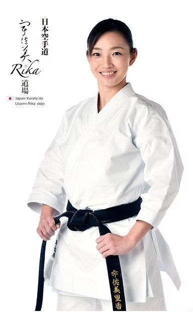
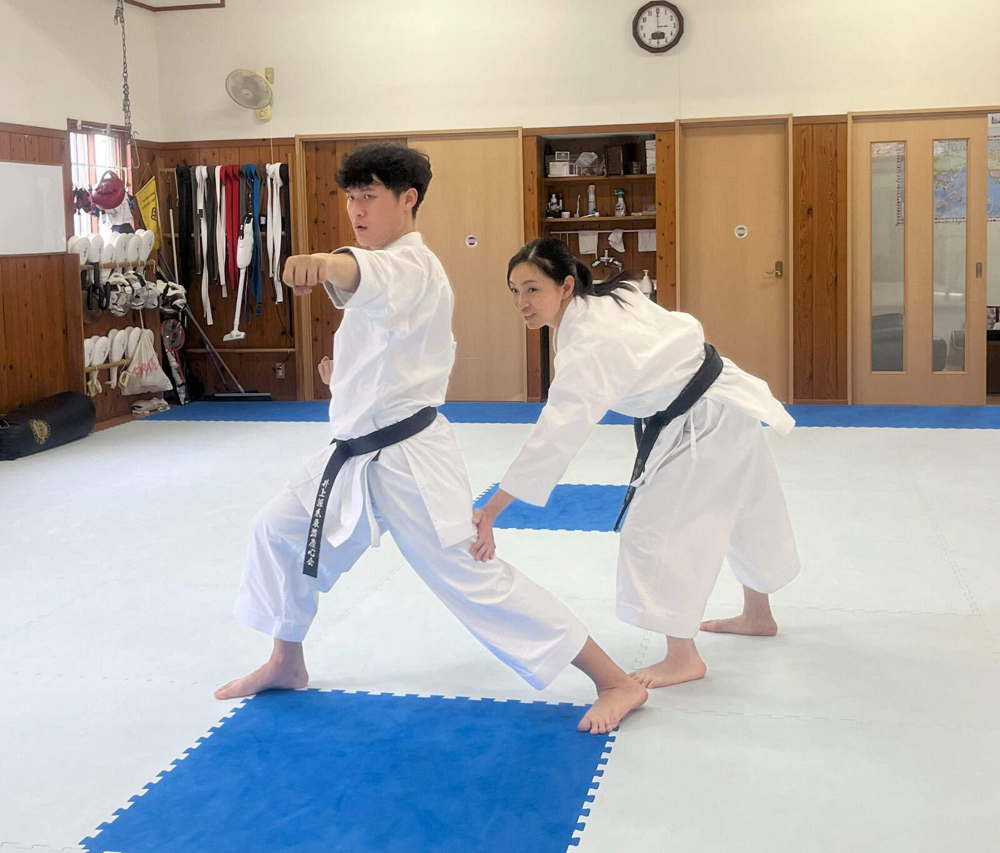
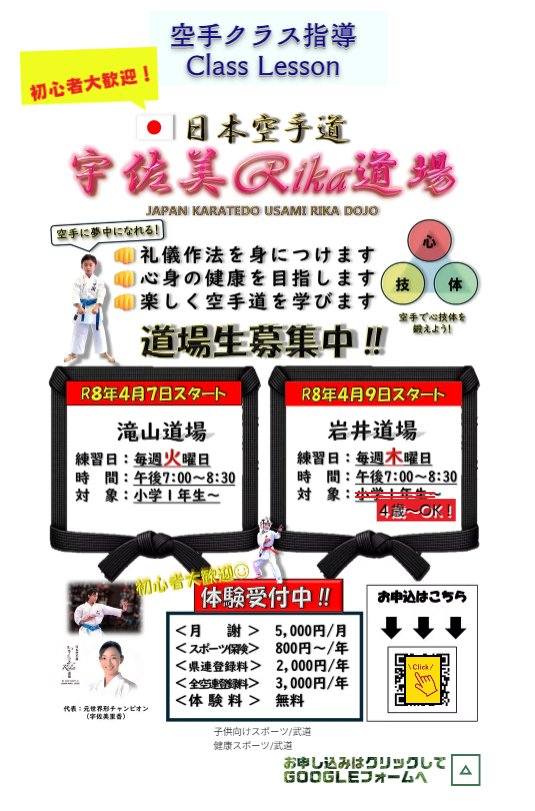

Born in Tokyo, Rika Usami devoted herself to karate and rose to become one of Japan's most respected kata champions.東京都出身。空手道に真摯に向き合い、日本を代表する形チャンピオンの一人として高く評価される。
Usami began practicing karate at the age of 10 (fifth grade) at her local Kanamachi Dojo. Under Shihan Terada and Shihan Konno, she studied Goju-ryu until her third year of junior high school.10歳の頃（小学5年）から地元の金町道場で空手を始める。寺田師範・金野師範のもとで剛柔流を学び、中学3年生まで道場に通う。 高校から空手道部のある帝京高校に進学し、祖父江利久先生・祖父江元太郎先生のもとで糸東流を学ぶ。高校3年生の時には全国高等学校総合体育大会（インターハイ）で優勝。その後、国士舘大学に進学する。
She later enrolled at Teikyo High School, which has a renowned karate program, where she studied Shito-ryu under Toshihisa Sobue and Gentaro Sobue. During her third year of high school, she won the National High School Inter-High Championships before continuing her studies at Kokushikan University.大学1年生の時、大学監督の紹介で鳥取県の井上慶身先生と出会い、技術を磨く。世界ジュニア・カデット空手道選手権大会で優勝し、その後ナショナルチーム入りを果たす。大学4年生で全日本空手道選手権大会に優勝した。
In her first year at university, she was introduced by her coach to Yoshimi Inoue in Tottori Prefecture, under whom she further refined her technique. She went on to win the World Junior & Cadet Karate Championships and subsequently earned a place on Japan's national team. In her fourth year at university, she captured the title at the All Japan Karate Championships.大学卒業後、「世界一」を目指して鳥取県へ移住し、井上先生のもとで修練を重ねる。移住3年目に初めて世界大会へ出場し3位となるが、2年後の2012年、自身2度目の世界大会で女子形金メダルを獲得した。
After graduating, Usami relocated to Tottori with the goal of becoming the best in the world, continuing her training under Inoue. In her third year there, she competed at the World Karate Championships for the first time and finished with a bronze medal. Two years later, in 2012, she claimed the gold medal in women's kata at her second appearance at the World Championships.大学卒業後、「世界一」を目指して鳥取県へ移住し、井上先生のもとで修練を重ねる。移住3年目に初めて世界大会へ出場し3位となるが、2年後の2012年、自身2度目の世界大会で女子形金メダルを獲得した。
She retired from competition in 2013 and was appointed as a coach for Japan's national team. She then entered the Graduate School of Sport System at Kokushikan University, where she spent two years coaching the university's karate club. During this period, she also served as a KARATE Ambassador, promoting the sport as part of the campaign for its inclusion in the Tokyo Olympic Games. In 2015, she returned to Tottori and was appointed Chair of the Tokyo 2020 Olympic Strengthening Committee.翌2013年に現役を引退。その後はナショナルチームコーチに就任し、国士舘大学大学院スポーツ・システム研究科へ進学。2年間専任コーチとして空手道部の指導にあたる。また、東京オリンピック採用に向けたKARATEアンバサダーとして空手の普及活動も行った。2015年には鳥取県へ移住し、2020東京オリンピック強化委員長に就任。
Today, Usami serves as a Special Physical Education Instructor with the Tottori Sports Association. In addition to coaching athletes from Japan and around the world, she is dedicated to promoting and advancing the art of karate.現在は公益財団法人鳥取県スポーツ協会の特任体育指導員として勤務。国内外の選手への指導にあたるほか、空手道の普及・発展にも尽力している。
Final Female Kata · 21st WKF World Karate Championships, Paris 2012 · Gold Medal Performance
Beginners welcome from age 4. Whether you seek competitive excellence or a path to personal discipline, the dojo offers instruction for all levels.


Whether you are a complete beginner or an experienced competitor, the Usami Rika Dojo offers a path forward. For class availability and training inquiries, please use the form below or reach out by email.
